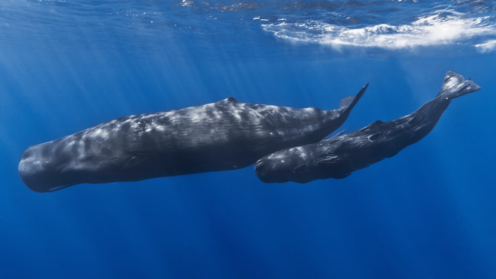
200 m
0 to 200 m
Sunlight zone
Sperm whales rest near the surface between dives. Every color is still visible.
Sperm whale, mother and calf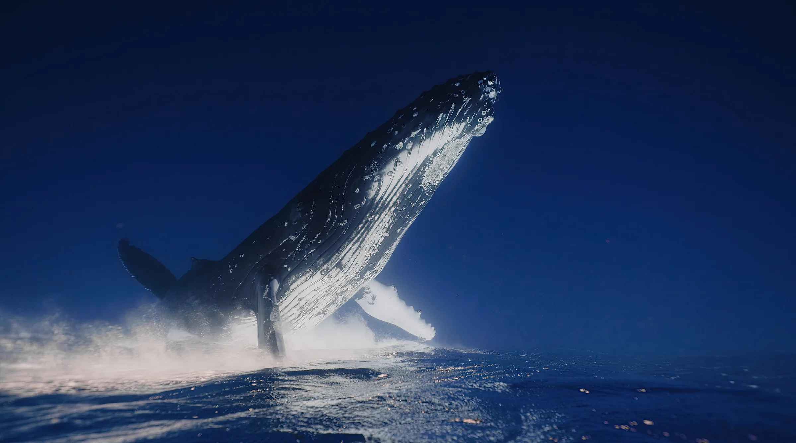
Private submersible descents to 6,000 meters. Four guests, one pilot, nine hours.
Sunlight stops at about 200 meters. Below that line is most of the living space on Earth, and almost nobody has seen it with their own eyes. We take four people at a time.

Sperm whales rest near the surface between dives. Every color is still visible.
Sperm whale, mother and calf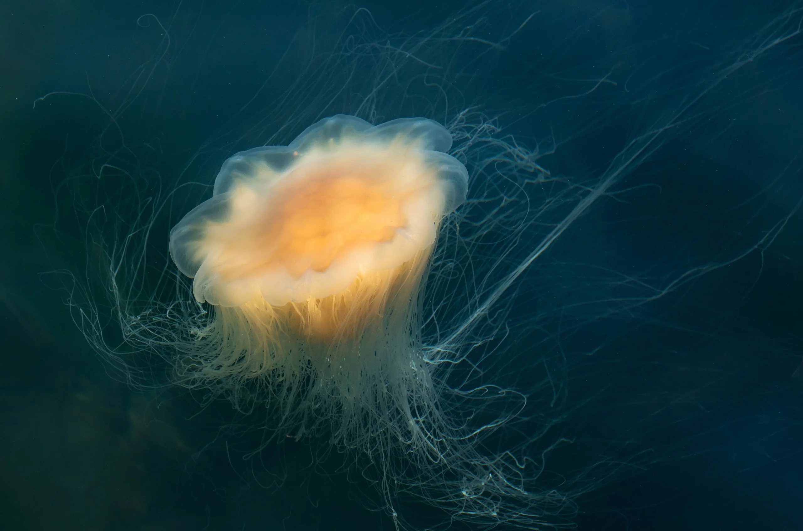
Red light is gone. Everything turns blue, then dark blue. Jellyfish drift here by the thousands.
Lion's mane jellyfish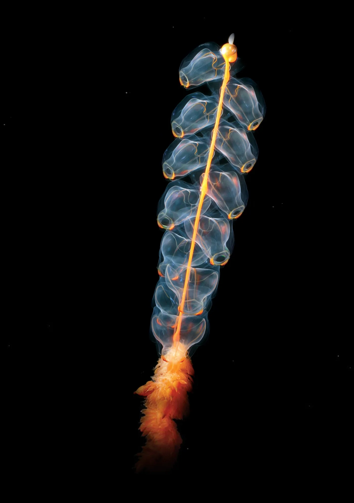
No sunlight reaches this depth. Most animals here make their own light. Move your mouse to aim the lights.
Siphonophore, Marrus orthocanna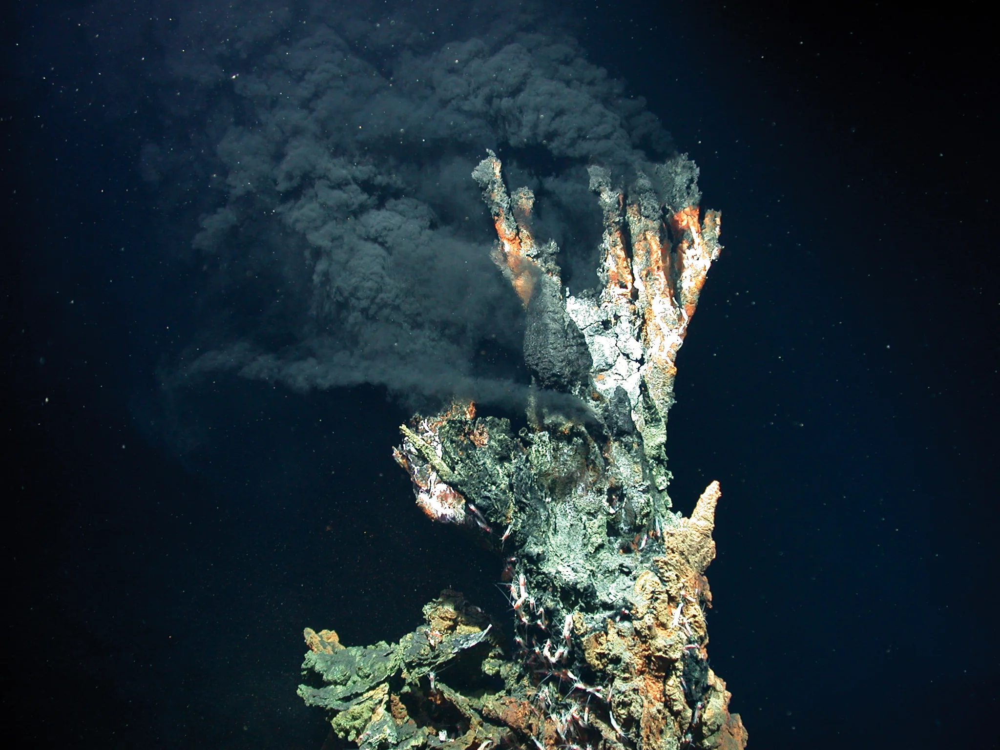
Black smoker vents pour out water at 400 °C. Whole communities live off them without any sunlight.
Black smoker, Mid-Atlantic RidgeWhen a whale dies, its body sinks to the bottom. The skeleton can feed life down here for decades.
Sleeper sharks, hagfish and crabs strip the soft tissue. This takes months, up to about two years.
Worms with no mouth and no gut, called Osedax, root into the bones to reach the fat inside.
Bacteria break down the oil left in the bones. Mussels, clams and snails live off them for decades.
Real 3D scan of a fossil whale, 6 to 9 million years old, Cerro Ballena, Chile. Smithsonian Institution, CC0.
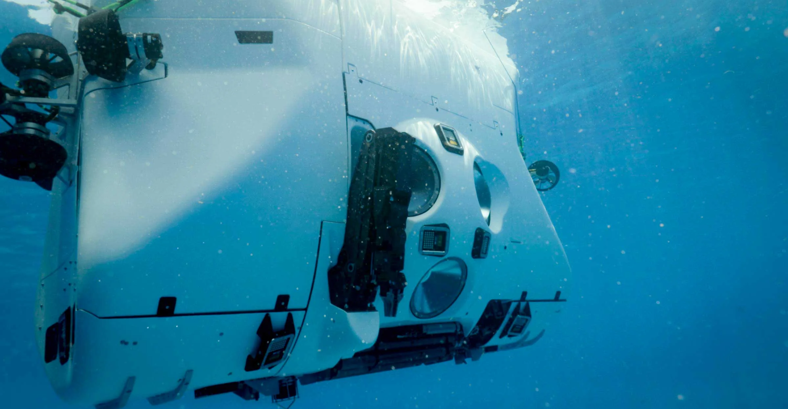
The crew sits inside a 2.1 meter sphere with three viewports. Click the orange dots to see the parts of the vessel.
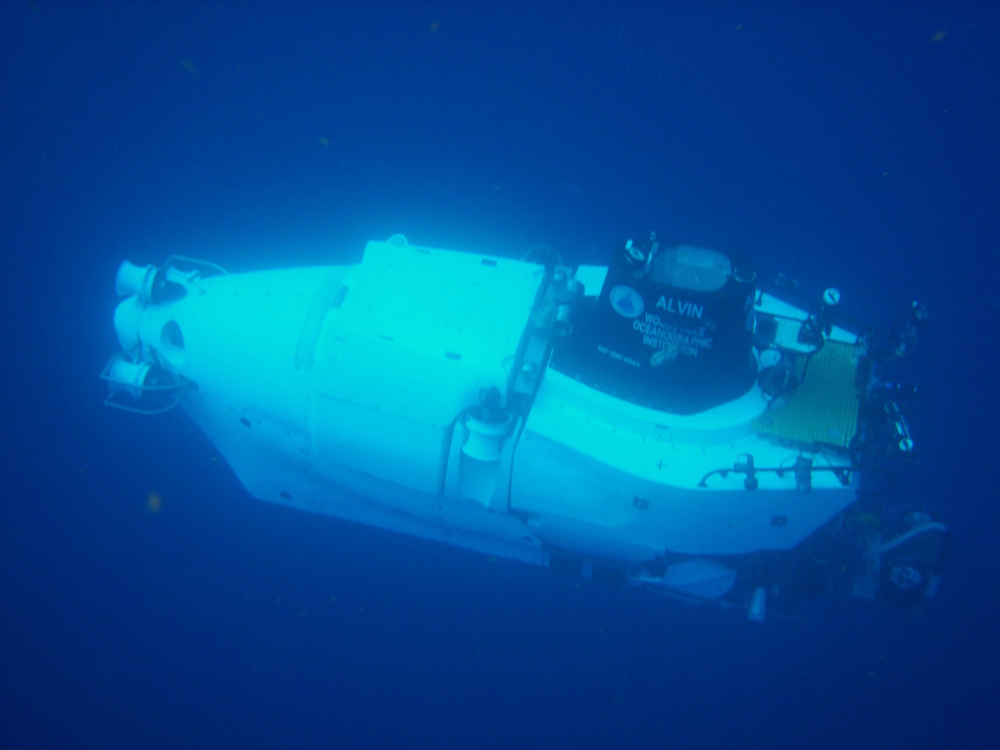
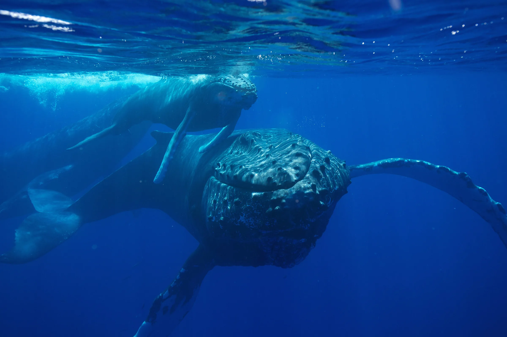
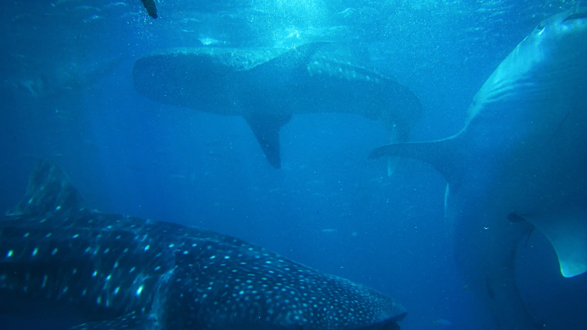
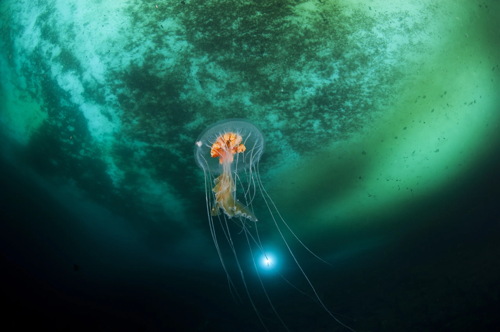
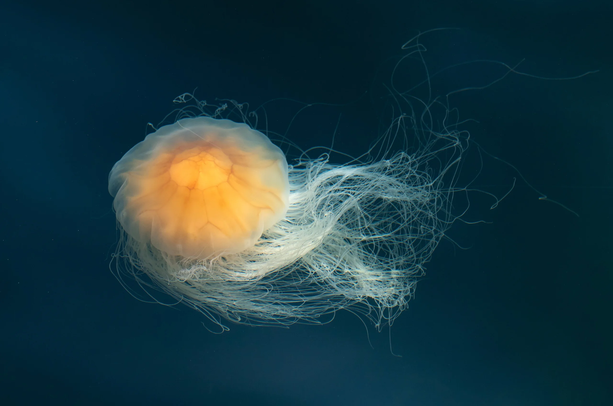
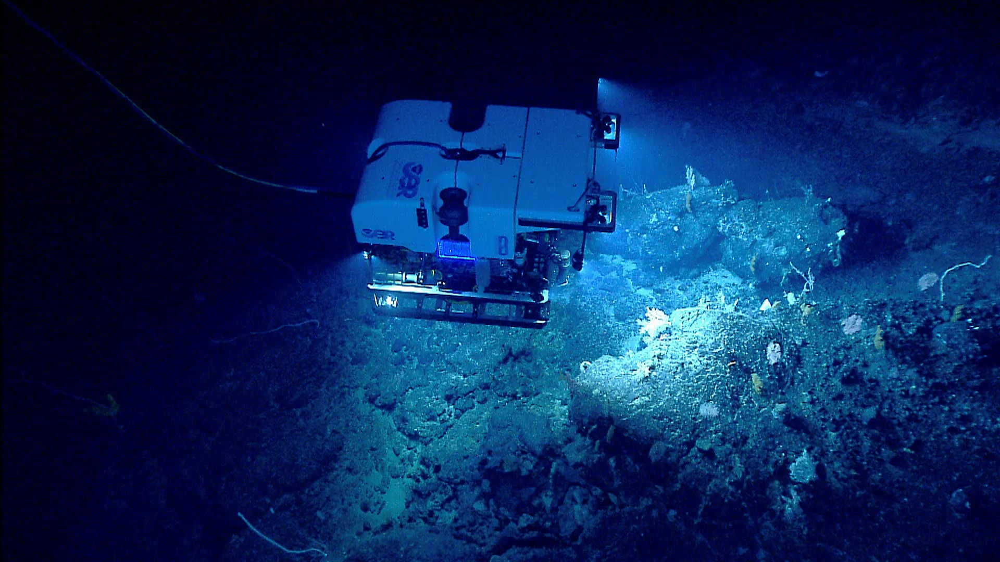
At 6,000 meters the water pushes about 600 times harder than at the surface. A bubble of air is squeezed to about 1/600 of its volume.
Press and hold to dive. Let go to come back up.
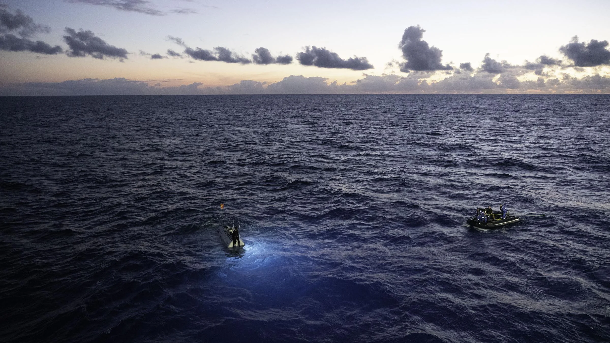
Nine hours later,back at the surface.